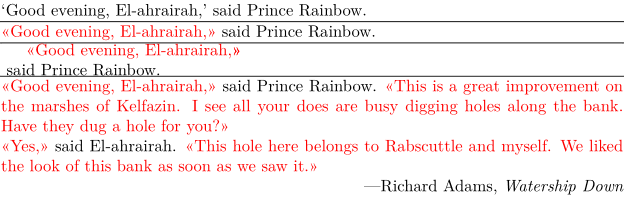

Syntax (autogenerated)
| \setupquote[...=...,...] | |
| ...=...,... | inherits from \setupdelimitedtext |
Syntax
| \setupquote[...,...=...,...] | |
| [...=...] | see \setupdelimitedtext |
Description
Setup the \quote and \startquote environments. See \setupdelimitedtext for all the parameters that may be adjusted.
Use \nobreak at the end of the string defining the left quotationmark in order to prevent linebreaks between word and quotationmark.
Example
-
\enableregime[utf] \startquote Good evening, El-ahrairah, \stopquote\ said Prince Rainbow. \hairline \setupquote[left=«\nobreak, right=\nobreak», color=red] \startquote Good evening, El-ahrairah, \stopquote\ said Prince Rainbow. \hairline \setupquote[location=paragraph] \startquote Good evening, El-ahrairah, \stopquote\ said Prince Rainbow. \hairline \quote{Good evening, El-ahrairah,} said Prince Rainbow. \quote{This is a great improvement on the marshes of Kelfazin. I see all your does are busy digging holes along the bank. Have they dug a hole for you?} \quote{Yes,} said El-ahrairah. \quote{This hole here belongs to Rabscuttle and myself. We liked the look of this bank as soon as we saw it.} \rightaligned{---Richard Adams, {\it Watership Down}}
- 
See also
Help from ConTeXt-Mailinglist/Forum
All issues with: